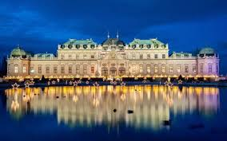
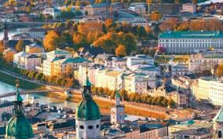
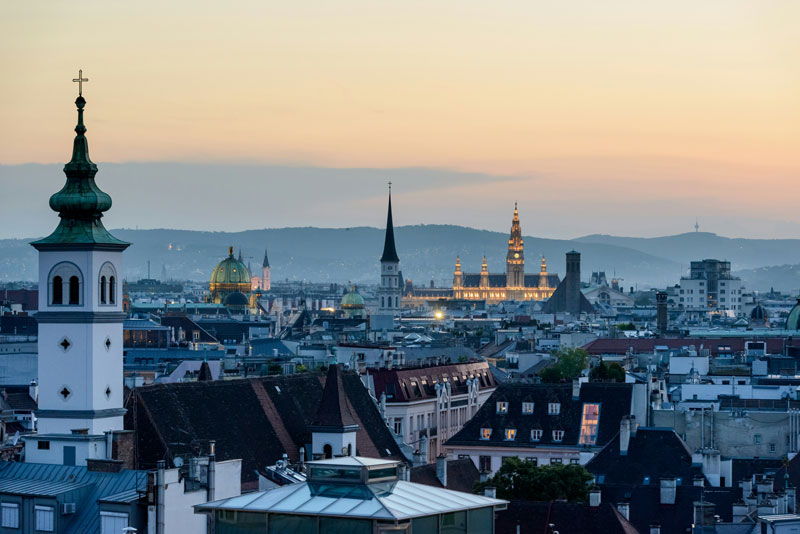

Вена
Місто музики та імперської величі

Вена зачаровує величною архітектурою, палацами та атмосферою старовинної Європи.
Собор Святого Стефана — символ міста та його історії.
Кав'ярні Відня — це окреме мистецтво, де час ніби сповільнюється.
Вена — це гармонія культури, музики та архітектури.